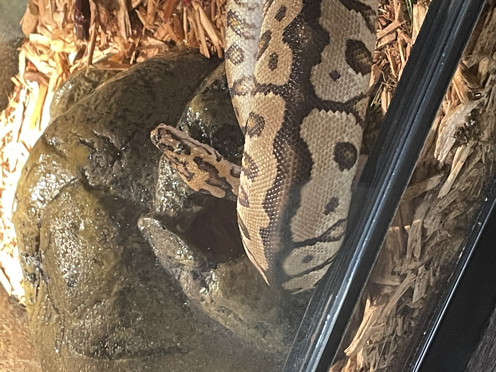

Have you ever wanted an easy pet to take care of that isn't high-maintenance, crazy, or smelly? This website is designed to teach you everything you need to know to take care of a ball python! Down below (or above), you can find multiple aspects to taking care of your own nope rope.

This website will show you different types of ball pythons, equipment needed for its safety, ways to care for it, scheduling, feeding, and more.
